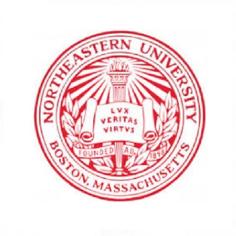
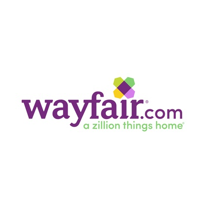
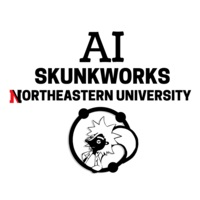

Recent Projects
Data driven analysis
R
Use case study
ANOVA
Career timeline
-
Sep 2008 - Jun 2012
Anna University
Bachelor in Engineering (B.E.)
- Majored in Electrical & Electronics Engineering
- Graduated with first-class honors without any arrears
- Served as a student coordinator and organized a robotics event at my college's technical symposium in 2011
-
May 2013 - Mar 2016
UST Global
Software Developer (ETL) - full time
- Developed BTEQ scripts for migration of data from one environment to another and for all development activities
- Coordinated with Anthem (formerly Wellpoint) for analysis of clinical, provider and claims data
- Conducted online presentations explaining about the basic facets involved in every project
- Worked in SSCR's and RIM's by following the SDLC process using Waterfall and Agile models
-
Apr 2016 - Jul 2017
UST Global
Senior Software Developer (ETL) - full time
- Improvement existing processes by automation using shell scripting
- Built numerous SAP Business Objects within a short sapan of time and implemented them in real time which resulted in more accurate data
- Lead a team where I used my experience in driving them to take strong ownership of tasks and deadlines
- Worked in different subject areas of healthcare insurance like claims, provider, member and clinical
-

Sep 2017 - Dec 2019
Northeastern University
Master of Science (M.S.)
- Majored in Data Analytics Engineering
- Former member of Pro Bono Analytics student club & FitU Northeastern
- Pursued courses such as Data Mining, Data Visualization, Supply Chain Engineering, Probability & Statistics, Financial Management and Operations Research
-
Feb 2018 - Apr 2018
Boston Scores
Database Developer - part time
- Created a database for Boston Scores – a non-profit which provides after-school soccer and other academic coaching for children studying in Boston Public Schools using Oracle SQL & Excel
- Improved the data management as a vehicle to expand the program by leveraging existing data and using operations research to enable better day-to-day activities
-
Apr 2018 - Apr 2019
Northeastern University
Residential Safety Office (RSO) Proctor - part time
- Worked on weekly shifts providing access control inside residence halls
- Resolved for issues within those halls, being present in all scheduled time shifts and being aware of all deadlines in the office
- Maintained constant communication with the Residential Safety Office staff, Supervisors and the Northeastern Police Department (NUPD) in case of emergencies
-

Jan 2019 - Jun 2019
Wayfair
Data Analyst (Operations) - co-op
- Reduced dwell time and increased the stops per route (SPR) of major asset-based delivery agents (DA’s) by 20% by analysis of large parcel (LP) data
- Developed a framework for inbound and outbound data for LTL and TL across all DA’s using SQL server
- Formulated reports for usage of all door utilization parameters for most constrained DA’s during Q1 2019 by means of R and Power BI
- Presented strategic plan of improving the returns, liquidations and aging freight carton space usage to steering committee with 10+ functional leads
-

Apr 2020
AI Skunkworks at Northeastern University
Data Researcher - part time
- Created data models and visualizations with regards to the COVID-19 crisis around the world and in the US
- Sourced information about various US-based epidemiologists and virologists
-
May 2020 - present
TrueLight Energy
Energy Data Analyst - internship
-
The
future
lies ahead!
Volunteering activites
- Led a team representing my organization for a blood donation drive as part of relief efforts in the 2015 Chennai floods and also for other events at UST Global
- Collaborated with an NGO called Udhavum Karangal by providing free raw food materials and textbooks for orphanaged children at UST Global
- Volunteered as a part of 'Cleaning the Marina Beach' initiative at UST Global
- Contributed at Greater Boston Food Bank sorting food for underprivileged people; inspected package quality to avoid pilferage and spoilage, ensuring 100% safety of food at Greater Boston Food Bank
- Volunteered at Long Island (Boston) for organic farming organized by B. Good at Wayfair
Contact Me